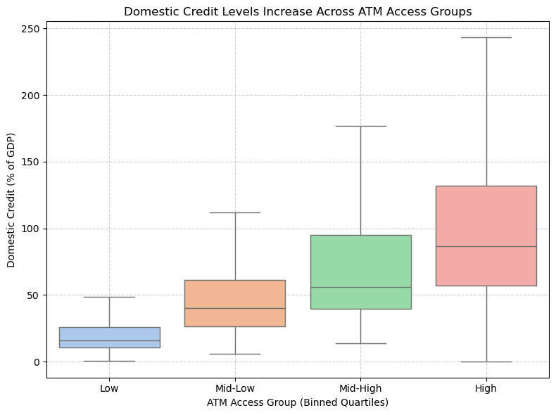
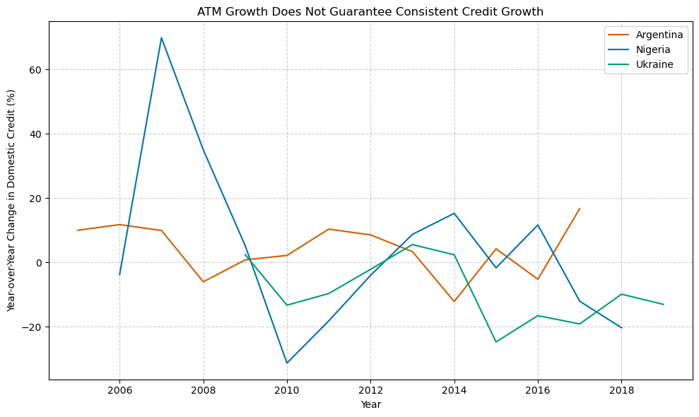

Proposition: Greater ATM access drives higher domestic credit levels across economies.
FOR the Proposition

Design Decisions and Rationale:
- Applied quartile binning to ATM density to group countries into four categorical access levels (“Low” to “High”), emphasizing broad patterns rather than noisy individual values. Score: +0.5
- Purposely used abstract bin labels instead of numeric cutoffs (e.g., “Low” instead of “0–30”) to direct viewer focus toward trend direction rather than scrutinizing precise bin thresholds or outliers. Score: -1
- Chose a boxplot to summarize the distribution of domestic credit within each ATM group, allowing median increases to support the idea of progression with access rather than letting individual observations create noise. Score: +1
- Removed outliers from the boxplot (`showfliers=False`) to prevent distracting exceptions from weakening the apparent group-level trend. Score: -0.5
- Titled the graph “Domestic Credit Levels Increase Across ATM Access Groups” to frame the visual as supporting an infrastructure-led growth argument. Score: 0
AGAINST the Proposition

Design Decisions and Rationale:
- Selected a small set of countries (Argentina, Nigeria, Ukraine) known for economic volatility, to highlight counterexamples to the overall trend. This cherry-picking exaggerates exceptions and undermines overall trend across all countries in original data set. Score: -1.5
- Used year-over-year percentage change rather than absolute credit levels to emphasize short-term volatility, even if overall trends might still support growth. This reframes the metric to visually contradict long-term patterns. Score: -1
- Chose a y-axis that includes large positive and negative swings, making even moderate credit changes appear unstable and erratic. By doing this, it amplifies the perceived inconsistency in credit growth. Score: -0.5
- I considered including in the caption how the 2008 financial recession may attribute to the dips in plot but decided that would disprove my opposing stance and make my graph seem invalid Score: -2
- Omitted trendlines or contextual indicators (e.g., global recession markers or average growth lines), leaving only noisy country-level paths. This absence subtly pushes the viewer to interpret credit growth as erratic and unsupported by infrastructure. Score: -1
Final Reflection
I thought this project overall was pretty straightforward. The most straightforward part of the assignment was figuring out what type of plot I wanted to use to illustrate a trend that supported my either side of proposition. The most difficult part was finding meaningful relationships within such a large and complex dataset. I found it difficult without consulting online economic resources to figure out which columns and their relationships to each other mattered.
I define ethical analysis and visualization to be conducting analysis and visualization of data with the intentions of providing data and insights where the reader can make their own decision rather than the one presenting the visualization. Essentially its where data is presented and visualized in a way where the reader has all the truthful information to make a decision or form an opinion without an invisible hand from the data scientist. An example of unethical analysis is when I purposely omitted outliers so they wouldn't take away from my supporting graph and its illustrated trend.
I think drawing bounds depends on the context of the data and its visualization. An omission or white lie isn't necessarily bad if the change directly affects the decision making and thought process of the viewer than it becomes unethical. An acceptable persuasive choice would be a choice to reduce noise or visual clutter so the reader can form a conclusion without distractions. However, a misleading choice would be a choice made where the truth of the dataset is being skewed and usually hides contradicting data. These misleading changes are usually made with intent of pushing a reader towards a certain conclusion.